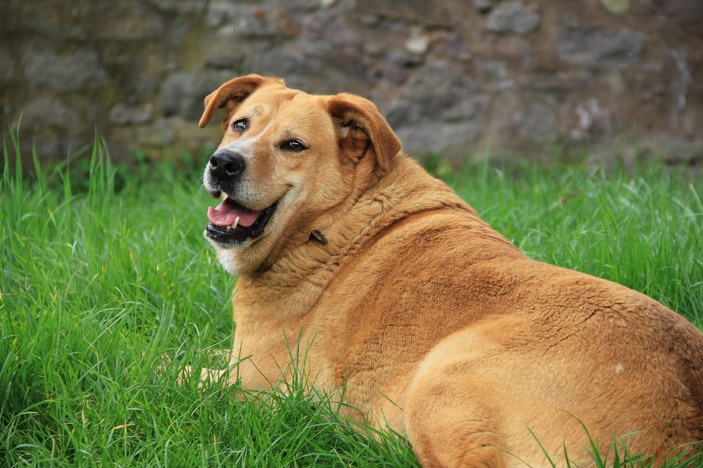
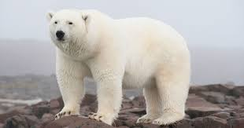
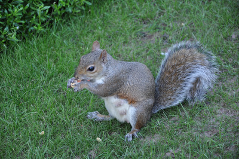
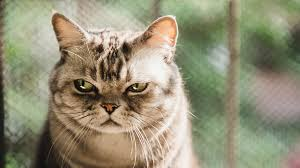

หมา หรือคำสุภาพว่า สุนัข (ชื่อวิทยาศาสตร์: Canis familiaris หรือ Canis lupus familiaris) เป็นสัตว์ที่สืบเชื้อสายมาจากหมาป่าที่ปรับตัวเป็นสัตว์เลี้ยง ที่มักชูหางขึ้นสูง หมาสืบสายพันธุ์จากหมาป่าโบราณที่สูญพันธุ์แล้ว และญาติใกล้ชิดกับหมาที่สุดที่ยังมีชีวิตอยู่คือหมาป่าสมัยใหม่ หมาเป็นสัตว์สปีชีส์แรกที่ถูกปรับเป็นสัตว์เลี้ยงให้กับคนเก็บของป่า ล่าสัตว์เมื่อมากกว่า 15,000 ปีก่อนซึ่งอยู่ก่อนหน้าการพัฒนาด้านเกษตรกรรม ...

หมี จัดอยู่ในไฟลัมสัตว์มีแกนสันหลัง ชั้นสัตว์เลี้ยงลูกด้วยนม อันดับสัตว์กินเนื้อ จัดอยู่ในวงศ์ Ursidae ออกลูกเป็นตัว ตาและใบหูกลมเล็ก ริมฝีปากยื่นแยกห่างออกจากเหงือก สามารถยืนและเดินด้วยขาหลังได้

กระรอก (ภาษาไทยถิ่นเหนือ, อีสาน: กระฮอก) เป็นสัตว์เลี้ยงลูกด้วยนม มีขนาดลำตัวเล็ก ขนปุยปกคลุมทั่วทั้งร่างกาย นัยน์ตากลมดำ หางเป็นพวงฟู จัดอยู่ในประเภทสัตว์ฟันแทะ ในวงศ์ Sciuridae

แมว (ชื่อวิทยาศาสตร์: Felis catus) เป็นสปีชีส์สัตว์เลี้ยงของสัตว์เลี้ยงลูกด้วยนมกินเนื้อขนาดเล็ก โดยเป็นแมวสปีชีส์เดียวในวงศ์เสือและแมว ที่ถูกปรับเป็นสัตว์เลี้ยง และมักเรียกเป็น แมวบ้าน